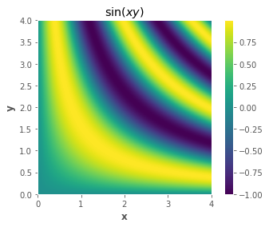
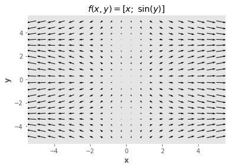
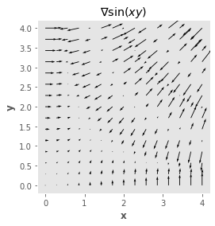
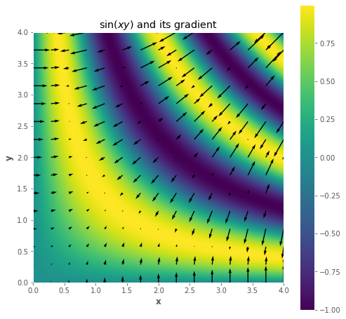

import numpy as np
from scipy.optimize import minimize
import matplotlib.pyplot as plt
plt.style.use('ggplot')
plt.rcParams.update({'font.size': 16,
'axes.labelweight': 'bold',
'axes.grid': False,
'figure.figsize': (8,6)})
def f(x, y, z):
return x**2 + y**2 + np.exp(z) + np.power(x,z) + x*y*z
f(1,2,3)
32.08553692318767
f = lambda x, y: np.sin(x * y)
x = np.linspace(0, 4, 1000)
y = np.linspace(0, 4, 1000)
xx, yy = np.meshgrid(x, y)
zz = f(xx, yy)
plt.imshow(zz, extent=(np.min(x), np.max(x), np.min(y), np.max(y)), origin="lower")
plt.xlabel("x")
plt.ylabel("y")
plt.title("$\sin(xy)$")
plt.colorbar();

def f(x, y):
return np.array([x, np.sin(y)])
f(2, 10)
array([ 2. , -0.54402111])
x = np.linspace(-5, 5, 20)
y = np.linspace(-5, 5, 20)
xx, yy = np.meshgrid(x, y)
zz = f(xx, yy)
plt.quiver(xx, yy, zz[0], zz[1])
# plt.axis('square');
plt.xlabel("x")
plt.ylabel("y")
plt.title("$f(x,y) = [x; \; \sin(y)]$")
plt.show()

# gradient vector field
f = lambda x, y: np.sin(x * y)
x = np.linspace(0, 4, 1000)
y = np.linspace(0, 4, 1000)
xx, yy = np.meshgrid(x, y)
zz = f(xx, yy)
plt.imshow(zz, extent=(np.min(x), np.max(x), np.min(y), np.max(y)), origin="lower")
plt.xlabel("x")
plt.ylabel("y")
plt.title("$\sin(xy)$")
plt.colorbar();
gradf = lambda x, y: (y * np.cos(x * y), x * np.cos(x * y))
xsmall = np.linspace(0, 4, 15)
ysmall = np.linspace(0, 4, 15)
xxsmall, yysmall = np.meshgrid(xsmall, ysmall)
gradx, grady = gradf(xxsmall, yysmall)
plt.quiver(xxsmall, yysmall, gradx, grady)
plt.axis("square")
plt.xlabel("x")
plt.ylabel("y")
plt.title("∇$ \sin(xy)$");

plt.figure(figsize=(8,8))
plt.imshow(zz,extent=(np.min(x), np.max(x), np.min(y), np.max(y)), origin='lower')
plt.colorbar();
plt.quiver(xxsmall,yysmall,gradx,grady);
plt.xlabel("x")
plt.ylabel("y")
plt.title("$\sin(xy)$ and its gradient");
